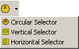

|
|
|
|
|
|
|
|
The Selector tool in the Graphical Objects toolbar can create three types of Selectors: Circular Selector, Vertical Selector, Horizontal Selector.

The following table describes each tab in the Selector Settings dialog box and references for more information.
|
Tab |
Section |
Settings |
|
General Tab |
The General Tab defines:
|
9.3.3 Selector General Tab |
|
Color Tab |
Defines the colors and images used on the Selector. |
9.3.4 Selector Color Tab |
|
Label Tab |
Defines the labels for each of the Selector's states. |
9.3.5 Selector Label Tab |
|
Input Mode Tab |
Defines the input mode and the operations for the Selector. |
9.3.6 Selector Input Mode Tab |
|
Visibility Tab |
Defines the visibility and blink features for the Selector. |
9.3.7 Selector Visibility Tab |
|
Advanced Tab |
Defines the Selector's Interlock setting. |
9.3.8 Selector Advanced Tab |